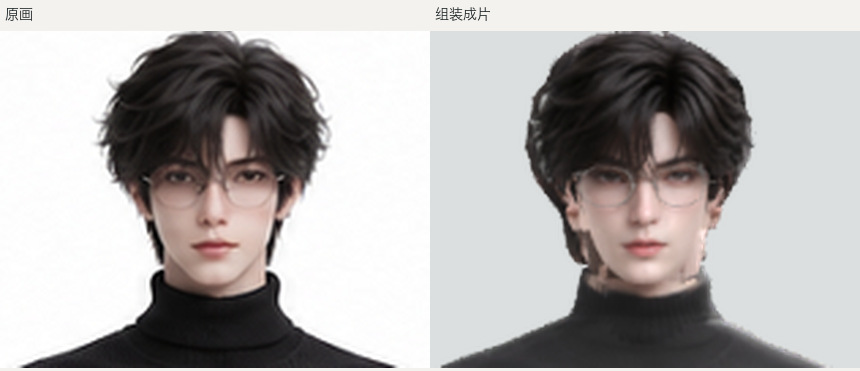
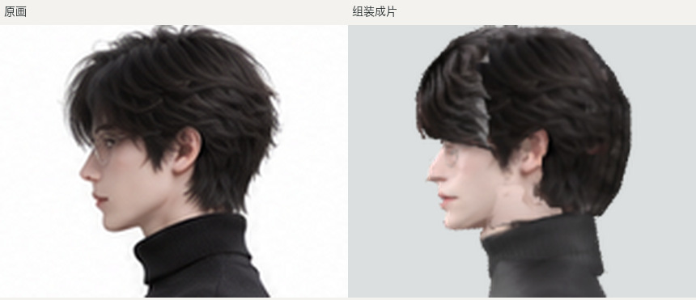
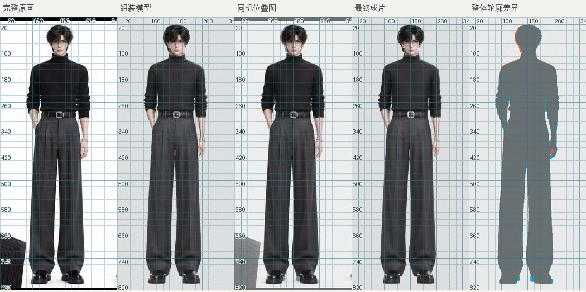
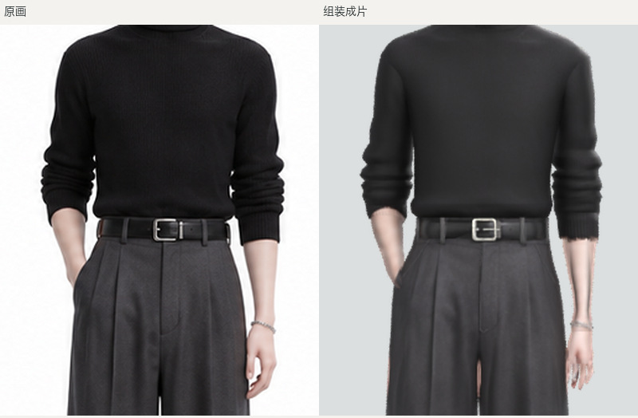
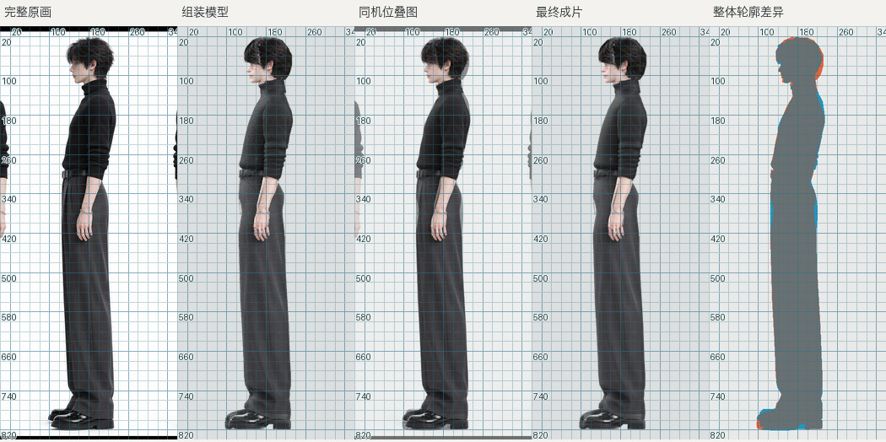
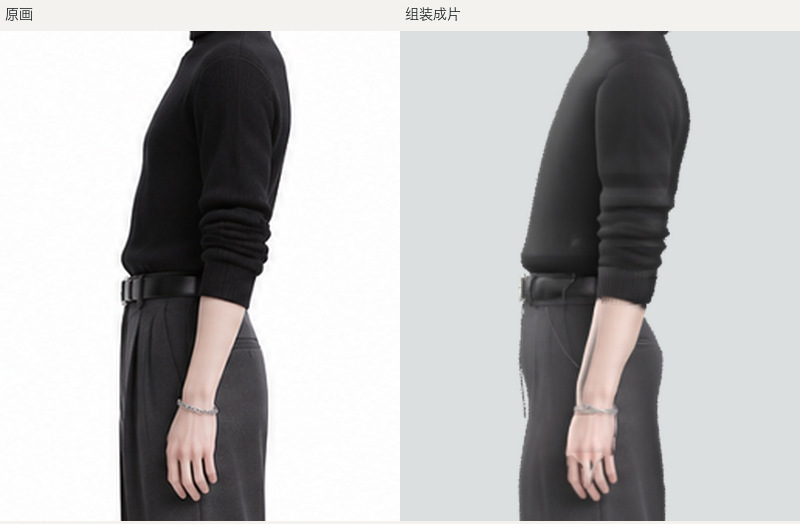
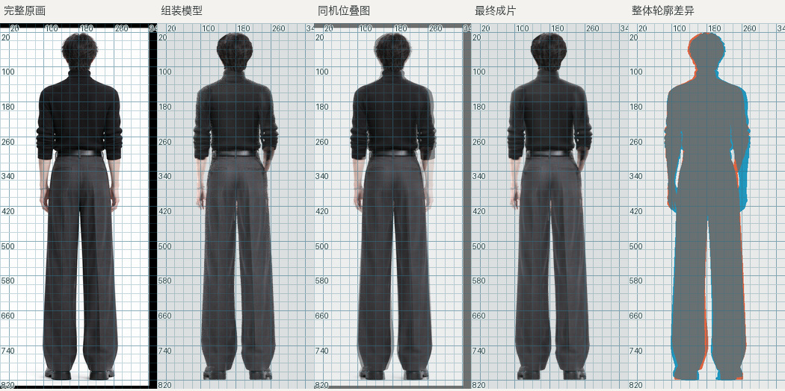
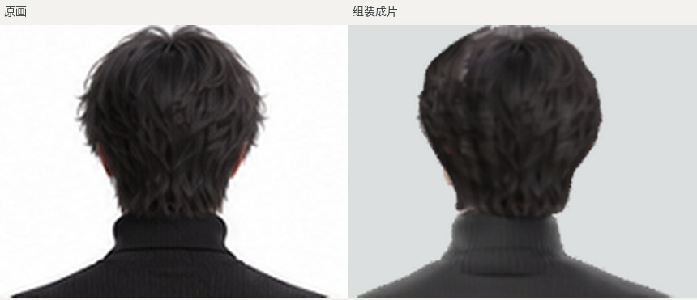
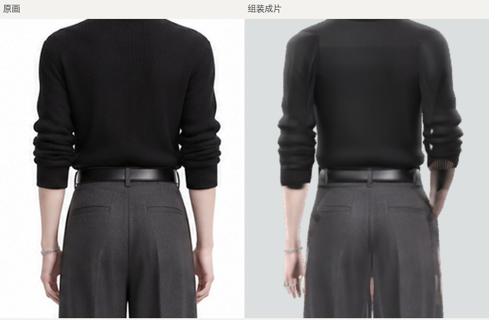

整体与逐件网格对照
蓝色为原画有而模型缺少的区域，橙色为模型多出的区域。灰色为重合，灰紫色为排除区。网格标注采用该栏原画的像素坐标，偏移为模型减原画，向右、向下为正。
逐段边界图中，白线连接模型边与原画目标，蓝圈标目标。红色表示搜索内缺边，紫色表示有多个候选，灰色表示画幅或遮挡证据不足。
完整测量记录
高精度对照 有部位需返修
本次覆盖 3/3 栏、3/3 件。已核对 0 项。
需返修 16 项 front 整体轮廓、front 可见发层、front 头脸与颈部、front 鞋履与鞋底、front 眉眼鼻唇、side 整体轮廓、side 可见发层、side 头脸与颈部、side 鞋履与鞋底、side 额鼻唇颏、back 整体轮廓、back 可见发层、back 头脸与颈部、back 鞋履与鞋底、back 后脑与领口、头脸与颈部多视图面部核对
待核对 3 项 front 高领罗纹、腰带与阔腿裤、side 高领罗纹、腰带与阔腿裤、back 高领罗纹、腰带与阔腿裤
头脸与颈部 · 面部多视图
侧向机位符合配置，绕头部上下轴的夹角 +90.0°，侧面仰俯 -0.0°
正面 需返修
原图裁框 158 × 124 px

同位置细网格 鼻尖 偏差最大，0.99 px，修向原画 (+0.1, -1.0) px侧面 需返修
原图裁框 158 × 124 px

同位置细网格 颏前 偏差最大，5.00 px，修向原画 (+4.0, +3.0) px仍需处理的局部
front

需返修 原尺寸叠图 整体逐段边界定位轮廓交并比 0.974，缺少 2012 px²，多出 979 px²
包围框左、上、右、下偏移 +0 / +0 / -1 / -2 px
原画沿法线找模型 最大 17.25 px，P95 3.75 px，匹配 3376/3498，搜索内缺边 36，多解 86，画幅不足 0
模型沿法线找原画 最大 17.94 px，P95 3.13 px，匹配 3351/3682，搜索内缺边 241，多解 90，画幅不足 0
最大可定位偏差处，模型 (249.0, 425.5) 向原画位移 (+17.9, -1.8) px造型与神态 需返修
眉眼鼻唇 需返修 细镜框及双唇位置接近，发际和耳边轮廓仍较硬。对照标点 1 右外眼角 2 左外眼角 3 鼻尖 4 唇缝 5 颏点

高领罗纹、腰带与阔腿裤 待核对 分件
- 可见发层 需返修 整幅网格 · 局部网格 · 穿戴与遮挡 · 逐段边界定位
轮廓交并比 0.830，缺少 106 px²，多出 527 px²
包围框左、上、右、下偏移 -2 / +0 / -1 / +2 px
原画沿法线找模型 最大 14.98 px，P95 6.77 px，匹配 421/540，搜索内缺边 39，多解 80，画幅不足 0
模型沿法线找原画 最大 14.94 px，P95 6.48 px，匹配 406/506，搜索内缺边 20，多解 80，画幅不足 0
最大可定位偏差处，模型 (221.2, 71.1) 向原画位移 (+2.3, -14.8) px
- 头脸与颈部 需返修 整幅网格 · 局部网格 · 穿戴与遮挡 · 逐段边界定位
轮廓交并比 0.814，缺少 249 px²，多出 213 px²
包围框左、上、右、下偏移 +11 / +19 / -8 / -5 px
原画沿法线找模型 最大 16.37 px，P95 9.27 px，匹配 264/402，搜索内缺边 49，多解 89，画幅不足 0
模型沿法线找原画 最大 17.69 px，P95 10.77 px，匹配 251/394，搜索内缺边 43，多解 100，画幅不足 0
最大可定位偏差处，模型 (189.5, 84.0) 向原画位移 (+12.5, -12.5) px
- 鞋履与鞋底 需返修 整幅网格 · 局部网格 · 穿戴与遮挡 · 逐段边界定位
轮廓交并比 0.740，缺少 1056 px²，多出 217 px²
包围框左、上、右、下偏移 +1 / -5 / -5 / -2 px
原画沿法线找模型 最大 17.82 px，P95 13.00 px，匹配 392/474，搜索内缺边 82，多解 0，画幅不足 0
模型沿法线找原画 最大 17.08 px，P95 12.94 px，匹配 377/380，搜索内缺边 0，多解 3，画幅不足 0
最大可定位偏差处，模型 (204.3, 784.8) 向原画位移 (-17.3, -4.3) px
side

需返修 原尺寸叠图 整体逐段边界定位轮廓交并比 0.961，缺少 1741 px²，多出 1107 px²
包围框左、上、右、下偏移 +0 / -1 / -1 / -3 px
原画沿法线找模型 最大 17.05 px，P95 6.88 px，匹配 2085/2198，搜索内缺边 25，多解 49，画幅不足 39
模型沿法线找原画 最大 17.93 px，P95 6.67 px，匹配 2194/2272，搜索内缺边 42，多解 36，画幅不足 0
最大可定位偏差处，模型 (185.3, 809.5) 向原画位移 (+14.5, +10.5) px造型与神态 需返修
额鼻唇颏 需返修 鼻梁和下唇轮廓接近，耳前发层较厚。对照标点 1 鼻尖 2 唇缘 3 颏前

高领罗纹、腰带与阔腿裤 待核对 分件
- 可见发层 需返修 整幅网格 · 局部网格 · 穿戴与遮挡 · 逐段边界定位
轮廓交并比 0.881，缺少 102 px²，多出 572 px²
包围框左、上、右、下偏移 +0 / -1 / +2 / +2 px
原画沿法线找模型 最大 17.53 px，P95 10.23 px，匹配 439/482，搜索内缺边 18，多解 25，画幅不足 0
模型沿法线找原画 最大 12.95 px，P95 9.17 px，匹配 420/456，搜索内缺边 6，多解 30，画幅不足 0
最大可定位偏差处，模型 (185.0, 72.2) 向原画位移 (-17.0, +4.3) px
- 头脸与颈部 需返修 整幅网格 · 局部网格 · 穿戴与遮挡 · 逐段边界定位
轮廓交并比 0.886，缺少 121 px²，多出 91 px²
包围框左、上、右、下偏移 +0 / -1 / -27 / -4 px
原画沿法线找模型 最大 17.88 px，P95 4.35 px，匹配 259/304，搜索内缺边 18，多解 27，画幅不足 0
模型沿法线找原画 最大 12.64 px，P95 3.76 px，匹配 248/286，搜索内缺边 4，多解 34，画幅不足 0
最大可定位偏差处，模型 (178.0, 82.5) 向原画位移 (-16.0, -8.0) px
- 鞋履与鞋底 需返修 整幅网格 · 局部网格 · 穿戴与遮挡 · 逐段边界定位
轮廓交并比 0.799，缺少 699 px²，多出 332 px²
包围框左、上、右、下偏移 +0 / -8 / +0 / -3 px
原画沿法线找模型 最大 17.67 px，P95 10.00 px，匹配 317/370，搜索内缺边 12，多解 2，画幅不足 39
模型沿法线找原画 最大 17.93 px，P95 9.30 px，匹配 358/380，搜索内缺边 10，多解 12，画幅不足 0
最大可定位偏差处，模型 (185.3, 809.5) 向原画位移 (+14.5, +10.5) px
back

需返修 原尺寸叠图 整体逐段边界定位轮廓交并比 0.921，缺少 6370 px²，多出 3028 px²
包围框左、上、右、下偏移 +0 / -1 / -2 / -2 px
原画沿法线找模型 最大 18.00 px，P95 8.99 px，匹配 3225/3446，搜索内缺边 183，多解 38，画幅不足 0
模型沿法线找原画 最大 17.93 px，P95 8.32 px，匹配 3304/3696，搜索内缺边 372，多解 20，画幅不足 0
最大可定位偏差处，模型 (256.0, 408.5) 向原画位移 (+18.0, +0.0) px造型与神态 需返修

后脑与领口 需返修 后脑与高领分界清楚，原画的背面使用第二帧比较。
高领罗纹、腰带与阔腿裤 待核对 分件
- 可见发层 需返修 整幅网格 · 局部网格 · 穿戴与遮挡 · 逐段边界定位
轮廓交并比 0.868，缺少 365 px²，多出 429 px²
包围框左、上、右、下偏移 -4 / -1 / -5 / -1 px
原画沿法线找模型 最大 14.81 px，P95 6.75 px，匹配 364/390，搜索内缺边 22，多解 4，画幅不足 0
模型沿法线找原画 最大 9.60 px，P95 5.24 px，匹配 340/350，搜索内缺边 1，多解 9，画幅不足 0
最大可定位偏差处，模型 (217.9, 51.8) 向原画位移 (+6.6, +13.2) px
- 头脸与颈部 需返修 整幅网格 · 局部网格 · 穿戴与遮挡 · 逐段边界定位
轮廓交并比 0.000，缺少 23 px²，多出 14 px²
包围框左、上、右、下偏移 -2 / +6 / -57 / +15 px
原画沿法线找模型 最大 9.33 px，P95 9.17 px，匹配 8/52，搜索内缺边 44，多解 0，画幅不足 0
模型沿法线找原画 最大 5.84 px，P95 5.79 px，匹配 7/26，搜索内缺边 19，多解 0，画幅不足 0
最大可定位偏差处，模型 (150.5, 91.3) 向原画位移 (+0.0, -9.3) px
- 鞋履与鞋底 需返修 整幅网格 · 局部网格 · 穿戴与遮挡 · 逐段边界定位
轮廓交并比 0.581，缺少 1530 px²，多出 130 px²
包围框左、上、右、下偏移 +3 / +1 / +1 / -2 px
原画沿法线找模型 最大 15.00 px，P95 12.33 px，匹配 323/416，搜索内缺边 89，多解 4，画幅不足 0
模型沿法线找原画 最大 15.05 px，P95 12.48 px，匹配 330/338，搜索内缺边 6，多解 2，画幅不足 0
最大可定位偏差处，模型 (264.0, 815.5) 向原画位移 (-15.0, +1.2) px